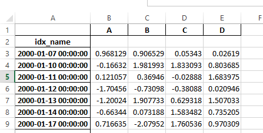

版本 0.17.0 (2015年10月9日)#
这是从 0.16.2 版本发布的一个主要版本，包含少量 API 更改、一些新功能、增强和性能改进，以及大量的错误修复。我们建议所有用户升级到此版本。
警告
pandas >= 0.17.0 将不再支持与 Python 3.2 版本的兼容性 (GH 9118)
警告
pandas.io.data 包已被弃用，将由 pandas-datareader 包取代。这将允许数据模块独立于你的 pandas 安装进行更新。pandas-datareader v0.1.1 的 API 与 pandas v0.17.0 中的 API 完全相同 (GH 8961, GH 10861)。
安装 pandas-datareader 后，你可以轻松更改你的导入：
from pandas.io import data, wb
变为
from pandas_datareader import data, wb
主要亮点包括
在某些 cython 操作上释放全局解释器锁 (GIL)，详见此处
绘图方法现在可作为
.plot访问器的属性使用，详见此处排序 API 已经过改进，以消除一些长期存在的不一致性，详见此处
支持将带有时区的
datetime64[ns]作为一流的 dtype，详见此处当遇到无法解析的格式时，
to_datetime的默认行为将是raise（抛出错误），而以前会返回原始输入。此外，日期解析函数现在返回一致的结果。详见此处HDFStore中dropna的默认值已更改为False，以便默认存储所有行，即使它们都为NaN。详见此处日期时间访问器 (
dt) 现在支持Series.dt.strftime用于为日期时间类型生成格式化字符串，以及Series.dt.total_seconds用于生成 timedelta 的总秒数。详见此处Period和PeriodIndex可以处理乘法频率，例如3D，对应3天的跨度。详见此处已安装的 pandas 开发版本现在将具有符合
PEP440的版本字符串 (GH 9518)使用 Air Speed Velocity 库进行基准测试的开发支持 (GH 8361)
支持读取 SAS xport 文件，详见此处
比较 SAS 和 pandas 的文档，详见此处
取消自 0.8.0 版本以来已弃用的自动 TimeSeries 广播，详见此处
纯文本显示格式可以选择与 Unicode 东亚宽度对齐，详见此处
与 Python 3.5 的兼容性 (GH 11097)
与 matplotlib 1.5.0 的兼容性 (GH 11111)
新功能#
带时区的日期时间#
我们正在添加一个原生支持带时区日期时间的实现。以前，Series 或 DataFrame 列可以被分配带时区的日期时间，并作为 object dtype 工作。这在行数较多时存在性能问题。详见文档以了解更多详情。(GH 8260, GH 10763, GH 11034)。
新的实现允许所有行使用单一时区，并以高性能方式进行操作。
In [1]: df = pd.DataFrame(
...: {
...: "A": pd.date_range("20130101", periods=3),
...: "B": pd.date_range("20130101", periods=3, tz="US/Eastern"),
...: "C": pd.date_range("20130101", periods=3, tz="CET"),
...: }
...: )
...:
In [2]: df
Out[2]:
A B C
0 2013-01-01 2013-01-01 00:00:00-05:00 2013-01-01 00:00:00+01:00
1 2013-01-02 2013-01-02 00:00:00-05:00 2013-01-02 00:00:00+01:00
2 2013-01-03 2013-01-03 00:00:00-05:00 2013-01-03 00:00:00+01:00
[3 rows x 3 columns]
In [3]: df.dtypes
Out[3]:
A datetime64[ns]
B datetime64[ns, US/Eastern]
C datetime64[ns, CET]
Length: 3, dtype: object
In [4]: df.B
Out[4]:
0 2013-01-01 00:00:00-05:00
1 2013-01-02 00:00:00-05:00
2 2013-01-03 00:00:00-05:00
Name: B, Length: 3, dtype: datetime64[ns, US/Eastern]
In [5]: df.B.dt.tz_localize(None)
Out[5]:
0 2013-01-01
1 2013-01-02
2 2013-01-03
Name: B, Length: 3, dtype: datetime64[ns]
这还使用了一种新的 dtype 表示，其外观和感觉与 NumPy 的对应 datetime64[ns] 非常相似。
In [6]: df["B"].dtype
Out[6]: datetime64[ns, US/Eastern]
In [7]: type(df["B"].dtype)
Out[7]: pandas.core.dtypes.dtypes.DatetimeTZDtype
注意
由于 dtype 更改，底层 DatetimeIndex 的字符串表示略有不同，但功能上是相同的。
以前的行为
In [1]: pd.date_range('20130101', periods=3, tz='US/Eastern')
Out[1]: DatetimeIndex(['2013-01-01 00:00:00-05:00', '2013-01-02 00:00:00-05:00',
'2013-01-03 00:00:00-05:00'],
dtype='datetime64[ns]', freq='D', tz='US/Eastern')
In [2]: pd.date_range('20130101', periods=3, tz='US/Eastern').dtype
Out[2]: dtype('<M8[ns]')
新的行为
In [8]: pd.date_range("20130101", periods=3, tz="US/Eastern")
Out[8]:
DatetimeIndex(['2013-01-01 00:00:00-05:00', '2013-01-02 00:00:00-05:00',
'2013-01-03 00:00:00-05:00'],
dtype='datetime64[ns, US/Eastern]', freq='D')
In [9]: pd.date_range("20130101", periods=3, tz="US/Eastern").dtype
Out[9]: datetime64[ns, US/Eastern]
释放 GIL#
我们正在某些 Cython 操作上释放全局解释器锁 (GIL)。这将允许其他线程在计算期间同时运行，从而可能通过多线程提高性能。值得注意的是，groupby、nsmallest、value_counts 和一些索引操作都从中受益。(GH 8882)
例如，以下代码中的 groupby 表达式将在分解步骤（例如 df.groupby('key')）以及 .sum() 操作期间释放 GIL。
N = 1000000
ngroups = 10
df = DataFrame(
{"key": np.random.randint(0, ngroups, size=N), "data": np.random.randn(N)}
)
df.groupby("key")["data"].sum()
释放 GIL 可以使使用线程进行用户交互（例如 QT）或执行多线程计算的应用程序受益。一个可以处理这些类型并行计算的库是 dask 库。
绘图子方法#
Series 和 DataFrame 的 .plot() 方法允许通过提供 kind 关键字参数来定制绘图类型。不幸的是，许多这些类型的绘图使用不同的必需和可选关键字参数，这使得很难发现任何给定的绘图类型使用数十个可能参数中的哪些。
为了缓解这个问题，我们添加了一个新的可选绘图接口，它将每种绘图类型作为 .plot 属性的方法暴露。现在，你可以使用 series.plot.<kind>(...) 来代替 series.plot(kind=<kind>, ...)。
In [10]: df = pd.DataFrame(np.random.rand(10, 2), columns=['a', 'b'])
In [11]: df.plot.bar()
由于此更改，这些方法现在都可以通过 Tab 补全来发现
In [12]: df.plot.<TAB> # noqa: E225, E999
df.plot.area df.plot.barh df.plot.density df.plot.hist df.plot.line df.plot.scatter
df.plot.bar df.plot.box df.plot.hexbin df.plot.kde df.plot.pie
每个方法签名只包含相关参数。目前，这些参数仅限于必需参数，但将来也会包含可选参数。有关概述，请参阅新的绘图 API 文档。
dt 访问器的附加方法#
Series.dt.strftime#
我们现在支持 Series.dt.strftime 方法，用于日期时间类型生成格式化字符串 (GH 10110)。示例：
# DatetimeIndex
In [13]: s = pd.Series(pd.date_range("20130101", periods=4))
In [14]: s
Out[14]:
0 2013-01-01
1 2013-01-02
2 2013-01-03
3 2013-01-04
Length: 4, dtype: datetime64[ns]
In [15]: s.dt.strftime("%Y/%m/%d")
Out[15]:
0 2013/01/01
1 2013/01/02
2 2013/01/03
3 2013/01/04
Length: 4, dtype: object
# PeriodIndex
In [16]: s = pd.Series(pd.period_range("20130101", periods=4))
In [17]: s
Out[17]:
0 2013-01-01
1 2013-01-02
2 2013-01-03
3 2013-01-04
Length: 4, dtype: period[D]
In [18]: s.dt.strftime("%Y/%m/%d")
Out[18]:
0 2013/01/01
1 2013/01/02
2 2013/01/03
3 2013/01/04
Length: 4, dtype: object
字符串格式与 Python 标准库相同，详情可在此处找到：此处
Series.dt.total_seconds#
类型为 timedelta64 的 pd.Series 具有新方法 .dt.total_seconds()，返回 timedelta 的持续时间（以秒为单位）(GH 10817)
# TimedeltaIndex
In [19]: s = pd.Series(pd.timedelta_range("1 minutes", periods=4))
In [20]: s
Out[20]:
0 0 days 00:01:00
1 1 days 00:01:00
2 2 days 00:01:00
3 3 days 00:01:00
Length: 4, dtype: timedelta64[ns]
In [21]: s.dt.total_seconds()
Out[21]:
0 60.0
1 86460.0
2 172860.0
3 259260.0
Length: 4, dtype: float64
Period 频率增强#
Period、PeriodIndex 和 period_range 现在可以接受乘法频率。此外，Period.freq 和 PeriodIndex.freq 现在存储为 DateOffset 实例，而非 str，就像 DatetimeIndex 一样 (GH 7811)
乘法频率表示相应长度的跨度。以下示例创建一个为期 3 天的 period。加法和减法将使 period 按其跨度移动。
In [22]: p = pd.Period("2015-08-01", freq="3D")
In [23]: p
Out[23]: Period('2015-08-01', '3D')
In [24]: p + 1
Out[24]: Period('2015-08-04', '3D')
In [25]: p - 2
Out[25]: Period('2015-07-26', '3D')
In [26]: p.to_timestamp()
Out[26]: Timestamp('2015-08-01 00:00:00')
In [27]: p.to_timestamp(how="E")
Out[27]: Timestamp('2015-08-03 23:59:59.999999999')
你可以在 PeriodIndex 和 period_range 中使用乘法频率。
In [28]: idx = pd.period_range("2015-08-01", periods=4, freq="2D")
In [29]: idx
Out[29]: PeriodIndex(['2015-08-01', '2015-08-03', '2015-08-05', '2015-08-07'], dtype='period[2D]')
In [30]: idx + 1
Out[30]: PeriodIndex(['2015-08-03', '2015-08-05', '2015-08-07', '2015-08-09'], dtype='period[2D]')
支持 SAS XPORT 文件#
read_sas() 提供读取 SAS XPORT 格式文件的支持。(GH 4052)。
df = pd.read_sas("sas_xport.xpt")
还可以获取迭代器并递增读取 XPORT 文件。
for df in pd.read_sas("sas_xport.xpt", chunksize=10000):
do_something(df)
更多详情请参阅文档。
支持 .eval() 中的数学函数#
df = pd.DataFrame({"a": np.random.randn(10)})
df.eval("b = sin(a)")
支持的数学函数有 sin、cos、exp、log、expm1、log1p、sqrt、sinh、cosh、tanh、arcsin、arccos、arctan、arccosh、arcsinh、arctanh、abs 和 arctan2。
这些函数映射到 NumExpr 引擎的内在函数。对于 Python 引擎，它们映射到 NumPy 调用。
Excel 与 MultiIndex 的更改#
在 0.16.2 版本中，具有 MultiIndex 列的 DataFrame 无法通过 to_excel 写入 Excel。该功能已添加 (GH 10564)，并更新了 read_excel，以便可以通过在 header 和 index_col 参数中指定构成 MultiIndex 的列/行来无损地读取数据 (GH 4679)
更多详情请参阅文档。
In [31]: df = pd.DataFrame(
....: [[1, 2, 3, 4], [5, 6, 7, 8]],
....: columns=pd.MultiIndex.from_product(
....: [["foo", "bar"], ["a", "b"]], names=["col1", "col2"]
....: ),
....: index=pd.MultiIndex.from_product([["j"], ["l", "k"]], names=["i1", "i2"]),
....: )
....:
In [32]: df
Out[32]:
col1 foo bar
col2 a b a b
i1 i2
j l 1 2 3 4
k 5 6 7 8
[2 rows x 4 columns]
In [33]: df.to_excel("test.xlsx")
In [34]: df = pd.read_excel("test.xlsx", header=[0, 1], index_col=[0, 1])
In [35]: df
Out[35]:
col1 foo bar
col2 a b a b
i1 i2
j l 1 2 3 4
k 5 6 7 8
[2 rows x 4 columns]
以前，如果序列化数据有索引名称，则需要在 read_excel 中指定 has_index_names 参数。对于 0.17.0 版本，to_excel 的输出格式已更改，使得此关键字变得不必要——更改如下所示。
旧版
新版
警告
在 0.16.2 或更早版本中保存的、带有索引名称的 Excel 文件仍然可以读取，但必须将 has_index_names 参数指定为 True。
Google BigQuery 增强#
如果目标表/数据集不存在，则增加了使用
pandas.io.gbq.to_gbq()函数自动创建表/数据集的功能。(GH 8325, GH 11121)。通过
if_exists参数，增加了在调用pandas.io.gbq.to_gbq()函数时替换现有表和模式的能力。有关更多详细信息，请参阅文档 (GH 8325)。gbq 模块中的
InvalidColumnOrder和InvalidPageToken将抛出ValueError而不是IOError。generate_bq_schema()函数现已弃用，并将在未来版本中移除 (GH 11121)gbq 模块现在将支持 Python 3 (GH 11094)。
显示对齐与 Unicode 东亚宽度#
警告
启用此选项会影响 DataFrame 和 Series 的打印性能（大约慢 2 倍）。仅在实际需要时使用。
一些东亚国家使用其宽度相当于 2 个字母的 Unicode 字符。如果 DataFrame 或 Series 包含这些字符，则默认输出无法正确对齐。添加了以下选项以实现对这些字符的精确处理。
display.unicode.east_asian_width：是否使用 Unicode 东亚宽度计算显示文本宽度。(GH 2612)display.unicode.ambiguous_as_wide：是否将属于“模棱两可”的 Unicode 字符视为“宽”字符处理。(GH 11102)
In [36]: df = pd.DataFrame({u"国籍": ["UK", u"日本"], u"名前": ["Alice", u"しのぶ"]})
In [37]: df
Out[37]:
国籍 名前
0 UK Alice
1 日本 しのぶ
[2 rows x 2 columns]
In [38]: pd.set_option("display.unicode.east_asian_width", True)
In [39]: df
Out[39]:
国籍 名前
0 UK Alice
1 日本 しのぶ
[2 rows x 2 columns]
更多详情，请参见此处
其他增强#
支持
openpyxl>= 2.2。样式支持的 API 现在已经稳定 (GH 10125)merge现在接受参数indicator，它向输出对象添加一个分类类型列（默认命名为_merge），该列具有以下值 (GH 8790)观测值来源
_merge值合并键仅存在于
'left'帧中left_only合并键仅存在于
'right'帧中right_only合并键同时存在于两个帧中
bothIn [40]: df1 = pd.DataFrame({"col1": [0, 1], "col_left": ["a", "b"]}) In [41]: df2 = pd.DataFrame({"col1": [1, 2, 2], "col_right": [2, 2, 2]}) In [42]: pd.merge(df1, df2, on="col1", how="outer", indicator=True) Out[42]: col1 col_left col_right _merge 0 0 a NaN left_only 1 1 b 2.0 both 2 2 NaN 2.0 right_only 3 2 NaN 2.0 right_only [4 rows x 4 columns]
更多信息，请参阅更新的文档
pd.to_numeric是一个新函数，用于将字符串强制转换为数字（可能带有强制转换）(GH 11133)如果列名未被合并，
pd.merge现在将允许重复的列名 (GH 10639)。pd.pivot现在允许将索引作为None传递 (GH 3962)。pd.concat现在将在提供时使用现有 Series 名称 (GH 10698)。In [43]: foo = pd.Series([1, 2], name="foo") In [44]: bar = pd.Series([1, 2]) In [45]: baz = pd.Series([4, 5])
以前的行为
In [1]: pd.concat([foo, bar, baz], axis=1) Out[1]: 0 1 2 0 1 1 4 1 2 2 5
新的行为
In [46]: pd.concat([foo, bar, baz], axis=1) Out[46]: foo 0 1 0 1 1 4 1 2 2 5 [2 rows x 3 columns]
DataFrame增加了nlargest和nsmallest方法 (GH 10393)添加了
limit_direction关键字参数，与limit配合使用，使interpolate能够向前、向后或双向填充NaN值 (GH 9218, GH 10420, GH 11115)In [47]: ser = pd.Series([np.nan, np.nan, 5, np.nan, np.nan, np.nan, 13]) In [48]: ser.interpolate(limit=1, limit_direction="both") Out[48]: 0 NaN 1 5.0 2 5.0 3 7.0 4 NaN 5 11.0 6 13.0 Length: 7, dtype: float64
添加了
DataFrame.round方法，用于将值四舍五入到可变小数位数 (GH 10568)。In [49]: df = pd.DataFrame( ....: np.random.random([3, 3]), ....: columns=["A", "B", "C"], ....: index=["first", "second", "third"], ....: ) ....: In [50]: df Out[50]: A B C first 0.126970 0.966718 0.260476 second 0.897237 0.376750 0.336222 third 0.451376 0.840255 0.123102 [3 rows x 3 columns] In [51]: df.round(2) Out[51]: A B C first 0.13 0.97 0.26 second 0.90 0.38 0.34 third 0.45 0.84 0.12 [3 rows x 3 columns] In [52]: df.round({"A": 0, "C": 2}) Out[52]: A B C first 0.0 0.966718 0.26 second 1.0 0.376750 0.34 third 0.0 0.840255 0.12 [3 rows x 3 columns]
drop_duplicates和duplicated现在接受一个keep关键字，用于指定保留第一个、最后一个还是所有重复项。take_last关键字已被弃用，详见此处 (GH 6511, GH 8505)In [53]: s = pd.Series(["A", "B", "C", "A", "B", "D"]) In [54]: s.drop_duplicates() Out[54]: 0 A 1 B 2 C 5 D Length: 4, dtype: object In [55]: s.drop_duplicates(keep="last") Out[55]: 2 C 3 A 4 B 5 D Length: 4, dtype: object In [56]: s.drop_duplicates(keep=False) Out[56]: 2 C 5 D Length: 2, dtype: object
Reindex 现在有一个
tolerance参数，可以更精细地控制reindexing 填充限制 (GH 10411)In [57]: df = pd.DataFrame({"x": range(5), "t": pd.date_range("2000-01-01", periods=5)}) In [58]: df.reindex([0.1, 1.9, 3.5], method="nearest", tolerance=0.2) Out[58]: x t 0.1 0.0 2000-01-01 1.9 2.0 2000-01-03 3.5 NaN NaT [3 rows x 2 columns]
当用于
DatetimeIndex,TimedeltaIndex或PeriodIndex时，如果可能，tolerance将被强制转换为Timedelta。这允许你使用字符串指定容差。In [59]: df = df.set_index("t") In [60]: df.reindex(pd.to_datetime(["1999-12-31"]), method="nearest", tolerance="1 day") Out[60]: x 1999-12-31 0 [1 rows x 1 columns]
tolerance也通过底层Index.get_indexer和Index.get_loc方法暴露。增加了在对
TimeDeltaIndex进行重采样时使用base参数的功能 (GH 10530)DatetimeIndex可以使用包含NaT的字符串实例化 (GH 7599)to_datetime现在可以接受yearfirst关键字 (GH 7599)大于
Day偏移量的pandas.tseries.offsets现在可以与Series一起用于加减运算 (GH 10699)。更多详情请参阅文档。pd.Timedelta.total_seconds()现在返回 Timedelta 持续时间到纳秒精度（以前是微秒精度）(GH 10939)PeriodIndex现在支持与np.ndarray进行算术运算 (GH 10638)支持
Period对象的序列化 (GH 10439).as_blocks现在将接受一个可选参数copy以返回数据的副本，默认为复制（与先前版本行为不变），(GH 9607)传递给
DataFrame.filter的regex参数现在可以处理数字列名，而不会引发ValueError(GH 10384)。通过 URL 读取 gzip 压缩文件，可以通过明确设置压缩参数或通过 HTTP Content-Encoding 响应头推断 (GH 8685)
支持在
ExcelWriter中将列表和字典序列化为字符串 (GH 8188)SQL io 函数现在接受 SQLAlchemy 可连接对象。(GH 7877)
pd.read_sql和to_sql可以接受数据库 URI 作为con参数 (GH 10214)read_sql_table现在将允许从视图中读取 (GH 10750)。当使用
table格式时，支持将复杂值写入HDFStores(GH 10447)当 HDF 文件包含单个数据集时，启用
pd.read_hdf无需指定键即可使用 (GH 10443)pd.read_stata现在将读取 Stata 118 类型文件。(GH 9882)msgpack子模块已更新到 0.4.6 版本，并保持向后兼容性 (GH 10581)DataFrame.to_dict现在接受orient='index'关键字参数 (GH 10844)。如果传递的函数返回一个字典且
reduce=True，DataFrame.apply将返回一个字典 Series。(GH 8735)。允许将
kwargs传递给插值方法 (GH 10378)。当连接空的可迭代
Dataframe对象时，错误消息得到改进 (GH 9157)pd.read_csv现在可以增量读取 bz2 压缩文件，并且 C 解析器可以从 AWS S3 读取 bz2 压缩文件 (GH 11070, GH 11072)。在
pd.read_csv中，识别s3n://和s3a://URL 为 S3 文件存储 (GH 11070, GH 11071)。从 AWS S3 存储增量读取 CSV 文件，而不是先下载整个文件。（Python 2 中压缩文件仍需下载完整文件。）(GH 11070, GH 11073)
pd.read_csv现在能够推断从 AWS S3 存储读取的文件的压缩类型 (GH 11070, GH 11074)。
不向后兼容的 API 更改#
排序 API 更改#
排序 API 存在一些长期存在的不一致性。(GH 9816, GH 8239)。
以下是 0.17.0 版本**之前**的 API 摘要
Series.sort是**原地**操作，而DataFrame.sort返回一个新对象。Series.order返回一个新对象可以通过传递
by关键字，使用Series/DataFrame.sort_index按**值**排序。Series/DataFrame.sortlevel仅适用于MultiIndex，用于按索引排序。
为了解决这些问题，我们改进了 API
我们引入了一个新方法
DataFrame.sort_values()，它是DataFrame.sort()、Series.sort()和Series.order()的合并，用于处理**值**的排序。现有方法
Series.sort()、Series.order()和DataFrame.sort()已被弃用，并将在未来版本中移除。DataFrame.sort_index()的by参数已被弃用，并将在未来版本中移除。现有方法
.sort_index()将获得level关键字，以启用级别排序。
我们现在有两种不同且不重叠的排序方法。带 * 的项目将显示 FutureWarning。
按**值**排序
旧版 |
替代 |
|---|---|
* |
|
* |
|
* |
|
按**索引**排序
旧版 |
替代 |
|---|---|
|
|
|
|
|
|
|
|
* |
|
我们还弃用并更改了两个类似 Series 的类 Index 和 Categorical 中的类似方法。
旧版 |
替代 |
|---|---|
* |
|
* |
|
to_datetime 和 to_timedelta 的更改#
错误处理#
pd.to_datetime 错误处理的默认值已更改为 errors='raise'。在之前的版本中，它曾是 errors='ignore'。此外，coerce 参数已被弃用，取而代之的是 errors='coerce'。这意味着无效解析将抛出错误，而不是像以前的版本那样返回原始输入。(GH 10636)
以前的行为
In [2]: pd.to_datetime(['2009-07-31', 'asd'])
Out[2]: array(['2009-07-31', 'asd'], dtype=object)
新的行为
In [3]: pd.to_datetime(['2009-07-31', 'asd'])
ValueError: Unknown string format
当然，你也可以强制转换。
In [61]: pd.to_datetime(["2009-07-31", "asd"], errors="coerce")
Out[61]: DatetimeIndex(['2009-07-31', 'NaT'], dtype='datetime64[ns]', freq=None)
为了保持以前的行为，你可以使用 errors='ignore'
In [4]: pd.to_datetime(["2009-07-31", "asd"], errors="ignore")
Out[4]: Index(['2009-07-31', 'asd'], dtype='object')
此外，pd.to_timedelta 获得了类似的 API，即 errors='raise'|'ignore'|'coerce'，并且 coerce 关键字已被弃用，取而代之的是 errors='coerce'。
一致的解析#
to_datetime、Timestamp 和 DatetimeIndex 的字符串解析已实现一致性。(GH 7599)
在 v0.17.0 之前，Timestamp 和 to_datetime 可能会使用今天的日期错误地解析仅包含年份的日期时间字符串，否则 DatetimeIndex 会使用年初。对于某些 DatetimeIndex 可以解析的日期时间字符串类型（例如季度字符串），Timestamp 和 to_datetime 可能会引发 ValueError。
以前的行为
In [1]: pd.Timestamp('2012Q2')
Traceback
...
ValueError: Unable to parse 2012Q2
# Results in today's date.
In [2]: pd.Timestamp('2014')
Out [2]: 2014-08-12 00:00:00
v0.17.0 可以如下解析它们。它也适用于 DatetimeIndex。
新的行为
In [62]: pd.Timestamp("2012Q2")
Out[62]: Timestamp('2012-04-01 00:00:00')
In [63]: pd.Timestamp("2014")
Out[63]: Timestamp('2014-01-01 00:00:00')
In [64]: pd.DatetimeIndex(["2012Q2", "2014"])
Out[64]: DatetimeIndex(['2012-04-01', '2014-01-01'], dtype='datetime64[ns]', freq=None)
注意
如果你想根据今天的日期执行计算，请使用 Timestamp.now() 和 pandas.tseries.offsets。
In [65]: import pandas.tseries.offsets as offsets
In [66]: pd.Timestamp.now()
Out[66]: Timestamp('2025-06-05 02:18:37.974955')
In [67]: pd.Timestamp.now() + offsets.DateOffset(years=1)
Out[67]: Timestamp('2026-06-05 02:18:37.975720')
Index 比较的更改#
Index 上的相等运算符行为应与 Series 类似 (GH 9947, GH 10637)
从 v0.17.0 开始，比较不同长度的 Index 对象将引发 ValueError。这与 Series 的行为保持一致。
以前的行为
In [2]: pd.Index([1, 2, 3]) == pd.Index([1, 4, 5])
Out[2]: array([ True, False, False], dtype=bool)
In [3]: pd.Index([1, 2, 3]) == pd.Index([2])
Out[3]: array([False, True, False], dtype=bool)
In [4]: pd.Index([1, 2, 3]) == pd.Index([1, 2])
Out[4]: False
新的行为
In [8]: pd.Index([1, 2, 3]) == pd.Index([1, 4, 5])
Out[8]: array([ True, False, False], dtype=bool)
In [9]: pd.Index([1, 2, 3]) == pd.Index([2])
ValueError: Lengths must match to compare
In [10]: pd.Index([1, 2, 3]) == pd.Index([1, 2])
ValueError: Lengths must match to compare
请注意，这与 numpy 的行为不同，numpy 中比较可以广播
In [68]: np.array([1, 2, 3]) == np.array([1])
Out[68]: array([ True, False, False])
或者如果无法广播则返回 False
In [11]: np.array([1, 2, 3]) == np.array([1, 2])
Out[11]: False
布尔值与 None 比较的更改#
Series 与 None 的布尔比较现在将等同于与 np.nan 比较，而不再引发 TypeError。(GH 1079)。
In [69]: s = pd.Series(range(3), dtype="float")
In [70]: s.iloc[1] = None
In [71]: s
Out[71]:
0 0.0
1 NaN
2 2.0
Length: 3, dtype: float64
以前的行为
In [5]: s == None
TypeError: Could not compare <type 'NoneType'> type with Series
新的行为
In [72]: s == None
Out[72]:
0 False
1 False
2 False
Length: 3, dtype: bool
通常你只是想知道哪些值是空值。
In [73]: s.isnull()
Out[73]:
0 False
1 True
2 False
Length: 3, dtype: bool
警告
通常你会希望使用 isnull/notnull 进行这些类型的比较，因为 isnull/notnull 告诉你哪些元素是空值。必须注意 nan's 不比较相等，但 None's 比较相等。请注意 pandas/numpy 利用了 np.nan != np.nan 的事实，并将 None 视为 np.nan。
In [74]: None == None
Out[74]: True
In [75]: np.nan == np.nan
Out[75]: False
HDFStore dropna 行为#
HDFStore 写入函数在 format='table' 时的默认行为是保留所有缺失的行。以前，其行为是删除除了索引之外所有缺失的行。通过使用 dropna=True 选项可以重现以前的行为。(GH 9382)
以前的行为
In [76]: df_with_missing = pd.DataFrame(
....: {"col1": [0, np.nan, 2], "col2": [1, np.nan, np.nan]}
....: )
....:
In [77]: df_with_missing
Out[77]:
col1 col2
0 0.0 1.0
1 NaN NaN
2 2.0 NaN
[3 rows x 2 columns]
In [27]:
df_with_missing.to_hdf('file.h5',
key='df_with_missing',
format='table',
mode='w')
In [28]: pd.read_hdf('file.h5', 'df_with_missing')
Out [28]:
col1 col2
0 0 1
2 2 NaN
新的行为
In [78]: df_with_missing.to_hdf("file.h5", key="df_with_missing", format="table", mode="w")
In [79]: pd.read_hdf("file.h5", "df_with_missing")
Out[79]:
col1 col2
0 0.0 1.0
1 NaN NaN
2 2.0 NaN
[3 rows x 2 columns]
更多详情请参阅文档。
display.precision 选项的更改#
display.precision 选项已明确指代小数位数 (GH 10451)。
早期版本的 pandas 会将浮点数格式化为比 display.precision 值少一位小数。
In [1]: pd.set_option('display.precision', 2)
In [2]: pd.DataFrame({'x': [123.456789]})
Out[2]:
x
0 123.5
如果将精度解释为“有效数字”，这对于科学计数法是有效的，但同样的解释对于标准格式的值却无效。这也与 NumPy 处理格式的方式不一致。
今后，display.precision 的值将直接控制小数点后的位数，无论是常规格式还是科学计数法，类似于 NumPy 的 precision 打印选项的工作方式。
In [80]: pd.set_option("display.precision", 2)
In [81]: pd.DataFrame({"x": [123.456789]})
Out[81]:
x
0 123.46
[1 rows x 1 columns]
为了保持与之前版本相同的输出行为，display.precision 的默认值已从 7 减小到 6。
Categorical.unique 的更改#
Categorical.unique 现在返回具有唯一 categories 和 codes 的新 Categoricals，而不是返回 np.array (GH 10508)
无序分类：值和类别按出现顺序排序。
有序分类：值按出现顺序排序，类别保持现有顺序。
In [82]: cat = pd.Categorical(["C", "A", "B", "C"], categories=["A", "B", "C"], ordered=True)
In [83]: cat
Out[83]:
['C', 'A', 'B', 'C']
Categories (3, object): ['A' < 'B' < 'C']
In [84]: cat.unique()
Out[84]:
['C', 'A', 'B']
Categories (3, object): ['A' < 'B' < 'C']
In [85]: cat = pd.Categorical(["C", "A", "B", "C"], categories=["A", "B", "C"])
In [86]: cat
Out[86]:
['C', 'A', 'B', 'C']
Categories (3, object): ['A', 'B', 'C']
In [87]: cat.unique()
Out[87]:
['C', 'A', 'B']
Categories (3, object): ['A', 'B', 'C']
将 bool 作为 header 传递给解析器的更改#
在早期版本的 pandas 中，如果将布尔值传递给 read_csv、read_excel 或 read_html 的 header 参数，它会隐式转换为整数，导致 False 对应 header=0，True 对应 header=1 (GH 6113)
将布尔值作为 header 输入现在将引发 TypeError
In [29]: df = pd.read_csv('data.csv', header=False)
TypeError: Passing a bool to header is invalid. Use header=None for no header or
header=int or list-like of ints to specify the row(s) making up the column names
其他 API 更改#
使用
subplots=True的折线图和 KDE 图现在使用默认颜色，而不是全黑。指定color='k'可将所有线条绘制为黑色 (GH 9894)对具有
categoricaldtype 的 Series 调用.value_counts()方法，现在返回一个带有CategoricalIndex的 Series (GH 10704)pandas 对象的子类的元数据属性现在将被序列化 (GH 10553)。
使用
Categorical的groupby遵循与上述Categorical.unique相同的规则 (GH 10508)以前，当使用
complex64dtype 的数组构造DataFrame时，相应的列会自动提升为complex128dtype。现在 pandas 将保留复杂数据的输入项目大小 (GH 10952)一些数值归约运算符会返回
ValueError，而不是TypeError，当处理包含字符串和数字的对象类型时 (GH 11131)向
read_excel或ExcelFile.parse传递当前不支持的chunksize参数现在将引发NotImplementedError(GH 8011)允许将
ExcelFile对象传递给read_excel(GH 11198)如果
self和输入都以None作为freq，则DatetimeIndex.union不会推断freq(GH 11086)NaT的方法现在要么引发ValueError，要么返回np.nan或NaT(GH 9513)行为
方法
返回
np.nanweekday,isoweekday返回
NaTdate,now,replace,to_datetime,today返回
np.datetime64('NaT')to_datetime64(未更改)引发
ValueError所有其他公共方法（名称不以下划线开头）
弃用#
对于
Series，以下索引函数已弃用 (GH 10177)。已弃用函数
替代
.irow(i).iloc[i]或.iat[i].iget(i).iloc[i]或.iat[i].iget_value(i).iloc[i]或.iat[i]对于
DataFrame，以下索引函数已弃用 (GH 10177)。已弃用函数
替代
.irow(i).iloc[i].iget_value(i, j).iloc[i, j]或.iat[i, j].icol(j).iloc[:, j]
注意
这些索引函数自 0.11.0 版本以来已在文档中弃用。
Categorical.name已被弃用，以使Categorical更像numpy.ndarray。请改用Series(cat, name="whatever")(GH 10482)。在
Categorical的categories中设置缺失值 (NaN) 将发出警告 (GH 10748)。你仍然可以在values中拥有缺失值。drop_duplicates和duplicated的take_last关键字已被弃用，取而代之的是keep。(GH 6511, GH 8505)Series.nsmallest和nlargest的take_last关键字已被弃用，取而代之的是keep。(GH 10792)DataFrame.combineAdd和DataFrame.combineMult已弃用。它们可以通过使用add和mul方法轻松替换：DataFrame.add(other, fill_value=0)和DataFrame.mul(other, fill_value=1.)(GH 10735)。TimeSeries已弃用，取而代之的是Series（请注意，自 0.13.0 版本以来这已是别名），(GH 10890)SparsePanel已弃用，并将在未来版本中移除 (GH 11157)。Series.is_time_series已弃用，取而代之的是Series.index.is_all_dates(GH 11135)旧式偏移量（如
'A@JAN'）已被弃用（请注意，自 0.8.0 版本以来这已是别名）(GH 10878)WidePanel已弃用，取而代之的是Panel，LongPanel取而代之的是DataFrame（请注意，这些自 < 0.11.0 版本以来已是别名），(GH 10892)DataFrame.convert_objects已弃用，取而代之的是特定类型函数pd.to_datetime、pd.to_timestamp和pd.to_numeric（0.17.0 中新增）(GH 11133)。
移除之前版本的弃用/更改#
移除
Series.order()和Series.sort()中的na_last参数，转而使用na_position。(GH 5231)移除
.describe()中的percentile_width，转而使用percentiles。(GH 7088)移除
DataFrame.to_string()中的colSpace参数，转而使用col_space，大约在 0.8.0 版本左右。移除自动时间序列广播 (GH 2304)
In [88]: np.random.seed(1234) In [89]: df = pd.DataFrame( ....: np.random.randn(5, 2), ....: columns=list("AB"), ....: index=pd.date_range("2013-01-01", periods=5), ....: ) ....: In [90]: df Out[90]: A B 2013-01-01 0.471435 -1.190976 2013-01-02 1.432707 -0.312652 2013-01-03 -0.720589 0.887163 2013-01-04 0.859588 -0.636524 2013-01-05 0.015696 -2.242685 [5 rows x 2 columns]
以前
In [3]: df + df.A FutureWarning: TimeSeries broadcasting along DataFrame index by default is deprecated. Please use DataFrame.<op> to explicitly broadcast arithmetic operations along the index Out[3]: A B 2013-01-01 0.942870 -0.719541 2013-01-02 2.865414 1.120055 2013-01-03 -1.441177 0.166574 2013-01-04 1.719177 0.223065 2013-01-05 0.031393 -2.226989
当前
In [91]: df.add(df.A, axis="index") Out[91]: A B 2013-01-01 0.942870 -0.719541 2013-01-02 2.865414 1.120055 2013-01-03 -1.441177 0.166574 2013-01-04 1.719177 0.223065 2013-01-05 0.031393 -2.226989 [5 rows x 2 columns]
移除
HDFStore.put/append中的table关键字，转而使用format=(GH 4645)移除
read_excel/ExcelFile中未使用的kind参数 (GH 4712)移除
Series.tshift/shift中的offset和timeRule关键字，转而使用freq(GH 4853, GH 4864)移除
pd.load/pd.save别名，转而使用pd.to_pickle/pd.read_pickle(GH 3787)
性能改进#
使用 Air Speed Velocity 库进行基准测试的开发支持 (GH 8361)
为替代 ExcelWriter 引擎和读取 Excel 文件添加了 vbench 基准测试 (GH 7171)
Categorical.value_counts的性能改进 (GH 10804)SeriesGroupBy.nunique、SeriesGroupBy.value_counts和SeriesGroupby.transform的性能改进 (GH 10820, GH 11077)具有整数 dtype 的
DataFrame.drop_duplicates性能改进 (GH 10917)timedelta64和datetime64操作性能提升 8 倍 (GH 6755)使用切片器索引
MultiIndex的性能显著提高 (GH 10287)使用类列表输入时
iloc性能提升 8 倍 (GH 10791)当指定的格式字符串为 ISO8601 时，
to_datetime的性能得到改进 (GH 10178)当类别相同时，
concatof Categoricals 性能提升 20 倍 (GH 10587)当日期组件没有 0 填充时，在
to_datetime中启用infer_datetime_format(GH 11142)从 0.16.1 版本构建
DataFrame从嵌套字典的回归 (GH 11084)DateOffset与Series或DatetimeIndex进行加减运算的性能改进 (GH 10744, GH 11205)错误修复#
由于溢出导致
timedelta64[ns]的.mean()计算不正确的问题 (GH 9442)
在旧版 NumPy 上 .isin 的错误 (GH 11232)
DataFrame.to_html(index=False)渲染不必要的name行的错误 (GH 10344)DataFrame.to_latex()中无法传递column_format参数的错误 (GH 9402)DatetimeIndex在使用NaT本地化时的错误 (GH 10477)Series.dt操作中保留元数据的错误 (GH 10477)在传递到
to_datetime构造函数中，当其他部分无效时，保留NaT的错误 (GH 10477)DataFrame.apply在函数返回分类 Series 时的错误。(GH 9573)当提供无效日期和格式时，
to_datetime中的错误 (GH 10154)Index.drop_duplicates丢弃名称的错误 (GH 10115)Series.quantile丢弃名称的错误 (GH 10881)修复了
Index.drop_duplicates中丢失名称的错误 (GH 10115)修复了
Series.quantile中丢失名称的错误 (GH 10881)修复了在对索引具有频率的空
pd.Series设置值时的错误。(GH 10193)修复了
pd.Series.interpolate在order关键字值无效时的错误。(GH 10633)修复了
DataFrame.plot在颜色名称由多个字符指定时引发ValueError的错误 (GH 10387)修复了在使用混合元组列表构造
Index时的错误 (GH 10697)修复了
DataFrame.reset_index在索引包含NaT时的错误。(GH 10388)修复了
ExcelReader在工作表为空时的错误 (GH 6403)修复了
BinGrouper.group_info中返回值与基类不兼容的错误 (GH 10914)修复了清除
DataFrame.pop上的缓存以及随后的原地操作时的错误 (GH 10912)修复了使用混合整数
Index进行索引时导致ImportError的错误 (GH 10610)修复了
Series.count在索引包含空值时的错误 (GH 10946)修复了序列化非规则频率
DatetimeIndex时的错误 (GH 11002)修复了
DataFrame.where在数据框具有对称形状时，不遵循axis参数的错误。(GH 9736)修复了
Table.select_column中名称未保留的错误 (GH 10392)修复了
offsets.generate_range中start和end的精度高于offset的错误 (GH 9907)修复了
pd.rolling_*中输出会丢失Series.name的错误 (GH 10565)修复了
stack在索引或列不唯一时的错误。(GH 10417)修复了当轴具有
MultiIndex时设置Panel的错误 (GH 10360)修复了
USFederalHolidayCalendar中USMemorialDay和USMartinLutherKingJr不正确的错误 (GH 10278 和 GH 9760 )修复了
.sample()返回对象在设置时，会发出不必要的SettingWithCopyWarning的错误 (GH 10738)修复了
.sample()中权重作为Series传入时，在按位置处理前未沿轴对齐的错误，如果权重索引未与采样对象对齐，则可能导致问题。(GH 10738)修复了回归问题（GH 9311, GH 6620, GH 9345），即
groupby遇到类日期时间数据在某些聚合器下转换为浮点数的问题 (GH 10979)修复了
DataFrame.interpolate在axis=1和inplace=True时的错误 (GH 10395)修复了
io.sql.get_schema在将多个列指定为主键时的错误 (GH 10385)。修复了
groupby(sort=False)使用类日期时间Categorical时引发ValueError的错误 (GH 10505)修复了
groupby(axis=1)与filter()一起使用时抛出IndexError的错误 (GH 11041)修复了
test_categorical在大端序构建上的错误 (GH 10425)修复了
Series.shift和DataFrame.shift不支持分类数据的错误 (GH 9416)修复了
Series.map使用分类Series时引发AttributeError的错误 (GH 10324)修复了
MultiIndex.get_level_values包含Categorical时引发AttributeError的错误 (GH 10460)修复了
pd.get_dummies在sparse=True时不返回SparseDataFrame的错误 (GH 10531)修复了
Index子类型（如PeriodIndex）在.drop和.insert方法中不返回其自身类型的错误 (GH 10620)修复了
algos.outer_join_indexer在right数组为空时的错误 (GH 10618)修复了
filter(0.16.0 版的回归) 和transform在按多个键分组（其中一个键是类日期时间）时的错误 (GH 10114)修复了
to_datetime和to_timedelta导致Index名称丢失的错误 (GH 10875)修复了
len(DataFrame.groupby)在列仅包含 NaNs 时导致IndexError的错误 (GH 11016)修复了在对空 Series 进行重采样时导致段错误的错误 (GH 10228)
修复了
DatetimeIndex和PeriodIndex.value_counts会从其结果重置名称，但会在结果的Index中保留的错误。(GH 10150)修复了
pd.eval使用numexpr引擎时将单元素 numpy 数组强制转换为标量的错误 (GH 10546)修复了
pd.concat在axis=0时，当列的数据类型为category时的错误 (GH 10177)修复了
pd.read_csv使用 kwargsindex_col=False,index_col=['a', 'b']或dtype时的错误 (GH 10413, GH 10467, GH 10577)修复了
Series.from_csv中headerkwarg 未设置Series.name或Series.index.name的错误 (GH 10483)修复了
groupby.var导致方差对于小浮点值不准确的错误 (GH 10448)修复了
Series.plot(kind='hist')中 Y 轴标签信息不足的错误 (GH 10485)修复了
read_csv在使用生成uint8类型的转换器时的错误 (GH 9266)修复了时间序列线图和面积图中的内存泄漏错误 (GH 9003)
修复了当右侧是
DataFrame时，沿主轴或副轴切片设置Panel的错误 (GH 11014)修复了当
Panel的运算符函数（例如.add）未实现时，返回None而不引发NotImplementedError的错误 (GH 7692)修复了在
subplots=True时，线图和 KDE 图无法接受多种颜色的错误 (GH 9894)修复了
DataFrame.plot在颜色名称由多个字符指定时引发ValueError的错误 (GH 10387)修复了具有
MultiIndex的Series的左右align可能被反转的错误 (GH 10665)修复了具有
MultiIndex的左右join可能被反转的错误 (GH 10741)修复了
read_stata在读取columns中设置了不同顺序的文件时的错误 (GH 10757)修复了当类别包含
tz或Period时，Categorical可能无法正确表示的错误 (GH 10713)修复了
Categorical.__iter__可能无法返回正确的datetime和Period的错误 (GH 10713)修复了对具有
PeriodIndex的对象使用PeriodIndex进行索引时的错误 (GH 4125)修复了
read_csv与engine='c'一起使用时：文件结束符前面有注释、空行等情况未正确处理的错误 (GH 10728, GH 10548)修复了通过
DataReader读取“famafrench”数据时，由于网站 URL 更改而导致 HTTP 404 错误的错误 (GH 10591)。修复了
read_msgpack中要解码的 DataFrame 具有重复的列名的错误 (GH 9618)修复了
io.common.get_filepath_or_buffer中导致如果存储桶中还包含用户没有读取权限的键，则读取有效 S3 文件失败的错误 (GH 10604)修复了使用 Python 的
datetime.date和 NumPy 的datetime64对时间戳列进行矢量化设置的错误 (GH 10408, GH 10412)修复了
Index.take可能会添加不必要的freq属性的错误 (GH 10791)修复了
merge与空DataFrame合并时可能引发IndexError的错误 (GH 10824)修复了
to_latex中某些已记录参数的关键字参数不被识别的错误 (GH 10888)修复了对大型
DataFrame进行索引时未捕获IndexError的错误 (GH 10645 和 GH 10692)修复了
read_csv在文件仅包含标题行时使用nrows或chunksize参数的错误 (GH 9535)修复了 HDF5 中
category类型在存在其他编码时的序列化错误。(GH 10366)修复了
pd.DataFrame在构造具有字符串数据类型的空 DataFrame 时的错误 (GH 9428)修复了
pd.DataFrame.diff在 DataFrame 未合并时的错误 (GH 10907)修复了
pd.unique对于具有datetime64或timedelta64数据类型的数组，返回的是具有对象数据类型的数组而不是原始数据类型的错误 (GH 9431)修复了
Timedelta从 0 秒切片时引发错误的错误 (GH 10583)修复了
DatetimeIndex.take和TimedeltaIndex.take对于无效索引可能不引发IndexError的错误 (GH 10295)修复了
Series([np.nan]).astype('M8[ms]')的错误，现在它返回Series([pd.NaT])(GH 10747)修复了
PeriodIndex.order重置频率的错误 (GH 10295)修复了
date_range在freq将end作为纳秒进行除法时的错误 (GH 10885)修复了
iloc允许使用负整数访问 Series 范围之外的内存的错误 (GH 10779)修复了
read_msgpack中编码未被遵守的错误 (GH 10581)修复了当
iloc与包含适当负整数的列表一起使用时，无法访问第一个索引的错误 (GH 10547, GH 10779)修复了
TimedeltaIndex格式化程序在使用to_csv保存包含TimedeltaIndex的DataFrame时导致错误的错误 (GH 10833)修复了
pd.read_gbq在 Bigquery 返回零行时抛出ValueError的错误 (GH 10273)修复了
to_json在序列化 0 阶 ndarray 时导致段错误的错误 (GH 9576)修复了绘图函数在
GridSpec上绘图时可能引发IndexError的错误 (GH 10819)修复了绘图结果可能显示不必要的次刻度标签的错误 (GH 10657)
修复了
groupby对包含NaT的DataFrame进行聚合（例如first、last、min）时计算不正确的错误 (GH 10590, GH 11010)修复了构造
DataFrame时，传入只包含标量值的字典并指定列没有引发错误的错误 (GH 10856)修复了
.var()导致高度相似值的四舍五入错误的错误 (GH 10242)修复了
DataFrame.plot(subplots=True)具有重复列时输出不正确的结果的错误 (GH 10962)修复了
Index算术可能导致错误的类的错误 (GH 10638)修复了
date_range在频率为负数（按年、季、月）时结果为空的错误 (GH 11018)修复了
DatetimeIndex无法推断负频率的错误 (GH 11018)移除了对一些已弃用的 NumPy 比较操作的使用，主要在测试中。(GH 10569)
修复了
Index数据类型可能未正确应用的错误 (GH 11017)修复了
io.gbq在测试 Google API 客户端最低版本时的错误 (GH 10652)修复了从具有
timedelta键的嵌套dict构造DataFrame的错误 (GH 11129)修复了
.fillna在数据包含 datetime 数据类型时可能引发TypeError的错误 (GH 7095, GH 11153)修复了
.groupby在分组键的数量与索引长度相同时的错误 (GH 11185)修复了
convert_objects中当所有值都为空且coerce时，转换后的值可能不会被返回的错误 (GH 9589)修复了
convert_objects中copy关键字未被遵守的错误 (GH 9589)
贡献者#
共有 112 人为本次发布贡献了补丁。名字旁带有“+”的人是首次贡献补丁。
Alex Rothberg
Andrea Bedini +
Andrew Rosenfeld
Andy Hayden
Andy Li +
Anthonios Partheniou +
Artemy Kolchinsky
Bernard Willers
Charlie Clark +
Chris +
Chris Whelan
Christoph Gohlke +
Christopher Whelan
Clark Fitzgerald
Clearfield Christopher +
Dan Ringwalt +
Daniel Ni +
Data & Code Expert Experimenting with Code on Data +
David Cottrell
David John Gagne +
David Kelly +
ETF +
Eduardo Schettino +
Egor +
Egor Panfilov +
Evan Wright
Frank Pinter +
Gabriel Araujo +
Garrett-R
Gianluca Rossi +
Guillaume Gay
Guillaume Poulin
Harsh Nisar +
Ian Henriksen +
Ian Hoegen +
Jaidev Deshpande +
Jan Rudolph +
Jan Schulz
Jason Swails +
Jeff Reback
Jonas Buyl +
Joris Van den Bossche
Joris Vankerschaver +
Josh Levy-Kramer +
Julien Danjou
Ka Wo Chen
Karrie Kehoe +
Kelsey Jordahl
Kerby Shedden
Kevin Sheppard
Lars Buitinck
Leif Johnson +
Luis Ortiz +
Mac +
Matt Gambogi +
Matt Savoie +
Matthew Gilbert +
Maximilian Roos +
Michelangelo D’Agostino +
Mortada Mehyar
Nick Eubank
Nipun Batra
Ondřej Čertík
Phillip Cloud
Pratap Vardhan +
Rafal Skolasinski +
Richard Lewis +
Rinoc Johnson +
Rob Levy
Robert Gieseke
Safia Abdalla +
Samuel Denny +
Saumitra Shahapure +
Sebastian Pölsterl +
Sebastian Rubbert +
Sheppard, Kevin +
Sinhrks
Siu Kwan Lam +
Skipper Seabold
Spencer Carrucciu +
Stephan Hoyer
Stephen Hoover +
Stephen Pascoe +
Terry Santegoeds +
Thomas Grainger
Tjerk Santegoeds +
Tom Augspurger
Vincent Davis +
Winterflower +
Yaroslav Halchenko
Yuan Tang (Terry) +
agijsberts
ajcr +
behzad nouri
cel4
chris-b1 +
cyrusmaher +
davidovitch +
ganego +
jreback
juricast +
larvian +
maximilianr +
msund +
rekcahpassyla
robertzk +
scls19fr
seth-p
sinhrks
springcoil +
terrytangyuan +
tzinckgraf +